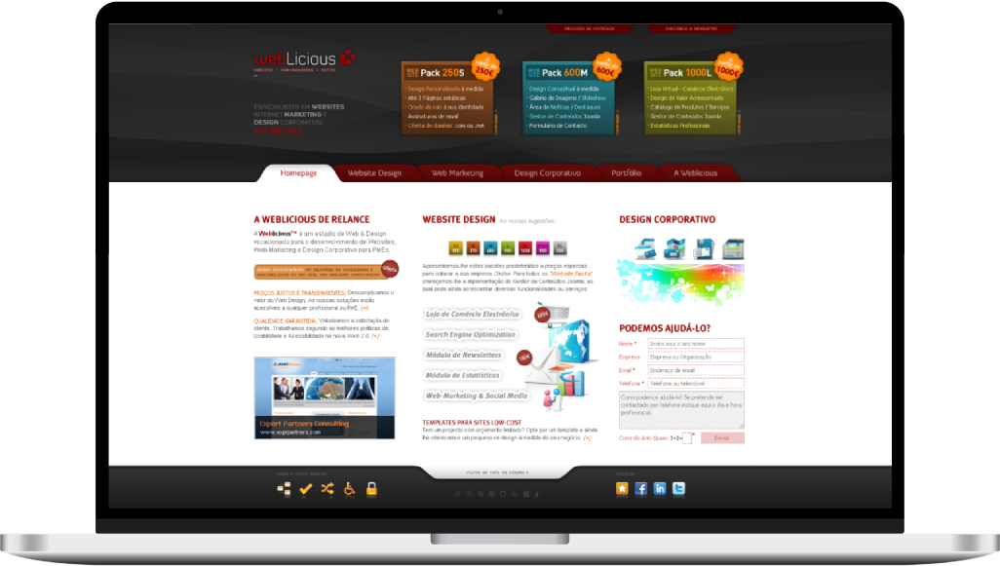
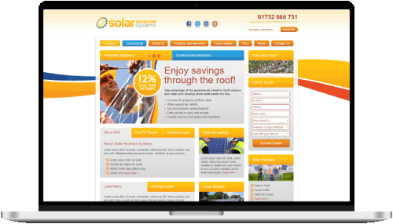
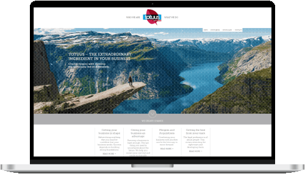
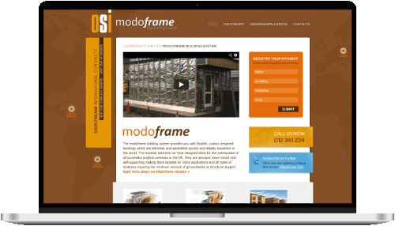
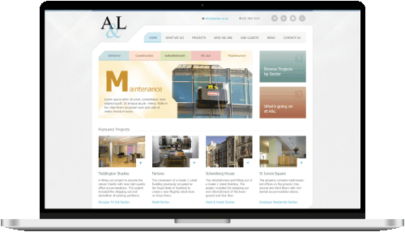
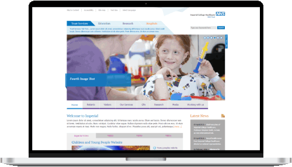
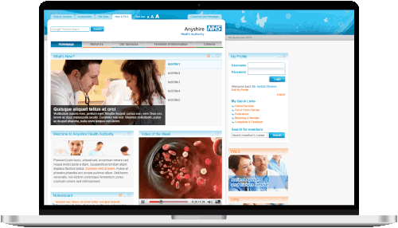

WebLicious: End-to-end Web Solutions
The Solo Full-Stack Entrepreneur

A decade of building tailored websites, digital marketing strategies, and maintenance services to small businesses.
The Business Opportunity
In 2008, Portugal's digital landscape was in its nascent stages. Internet penetration stood at
only 50%, and e-commerce adoption was a mere 6%. This presented a dual challenge and
opportunity: a vast majority (67%) of Portuguese SMEs lacked any online presence, yet the
digital advertising market was a growing €45 million. The global financial crisis simultaneously
heightened the need for cost-effective digital solutions, pushing businesses to seek
recession-resistant marketing channels.
As the founder of WebLicious, I operated as a
multifaceted professional:
- Delivered end-to-end web solutions including Strategy, Design, Development, Marketing and SEO.
- Built and launched over 50 tailored websites with customized CMS (e.g. WordPress) and Analytics.
- Designed omni-channel campaigns with social media, newsletters, pay-per-click and print ads.
- Managed the entire product lifecycle from value proposition to continuous improvement.
- Recruited and mentored two contributors, nurturing their skills, creativity, and growth.
Showcase Projects
I had the privilege of working with a diverse range of clients from the UK and Portugal, each with unique challenges and goals.

Solar Advanced Systems
This website showcases advanced solar energy solutions, from home setups to commercial projects. Its design focuses on building confidence with clear visuals and detailed product specs, serving as a solid resource for potential clients.

Totuus Consulting
A comprehensive website for this legal market consulting firm. It clearly explains their services, expertise, and values, turning complex ideas into easy-to-understand content. This site is a crucial tool for building client trust and bringing in new business.

Modoframe Building System
This website introduces an innovative modular building system, educating clients on its global uses. It breaks down complex engineering into an engaging, easy-to-grasp format, making it a vital marketing tool for education and lead generation.

Alexander & Law Property Services
A slick corporate website for this established property services company, featuring a personalized private client area. It highlights their diverse services and portfolio, reinforcing their reliable brand with a clean, professional look. A strong digital prospectus for increased online presence.

Imperial College NHS Trust
A large and accessible healthcare landing page that acts as a key information hub for services, education, and research. Its smart layout efficiently handles vast, critical content, making the Trust's offerings clear and engaging for the public.

NHS Trust Template
A super accessible, user-friendly template for NHS organizations, solving the need for a central, easy-to-access health information hub. This WCAG 1.0 compliant platform offers health info and services, designed for diverse public audiences. It's a trusted online spot, boosting public access to NHS info and promoting inclusivity.
Moving Forward
After nearly a decade immersed in the dynamic startup culture of WebLicious, I was ready for new challenges that involved collaborating with larger, multidisciplinary teams. My professional interests had evolved, drawing me towards a deeper focus on user experience (UX), product design, and the rapidly expanding field of mobile applications.
To ensure a smooth and responsible conclusion to this significant chapter, I strategically sold my regular accounts to a trusted competitor, guaranteeing continuity of service for my valued clients and allowing me to transition to new professional endeavors on a high note.
Lessons Learned
Holistic Approach Drives Value
Offering a comprehensive suite of digital services as a single point of contact simplifies processes for clients and ensures cohesive execution.
Adaptability & Multidisciplinary Expertise
Operating as a solo founder fostered constant adaptation and a broad range of skills, enhancing problem-solving and entrepreneurial agility.
Get in touch if you want a deeper dive or to discuss how my skills and expertise can
help on your challenges.
More about me on LinkedIn. Let's connect!